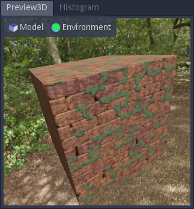

User interface¶
Overview¶
Material Maker mainly consists of 5 panes:
The Project pane (located in the center) contains the graph editors where materials are described for current projects
The Library pane (by default in the top left corner) contains all available nodes that can be used to create materials. Library items are shown in a tree view
The Hierarchy pane (by default in the bottom left corner) shows the hierarchy of node groups of the current material graph
The 2D preview pane (by default in the top right corner) shows the first texture generated by the currently selected node
The 3D preview pane (by default in the bottom right corner) shows the current material applied to a sample mesh in a sample environment
The 4 panes on the sides of the user interface can be moved around by dragging their title to their desired location and hidden using the View -> Panes
First steps with the user interface¶
When opening Material Maker, a new empty project is created and shown in the center pane. An empty project simply consists of a material node where textures for all elements of the material should be connected.
To create a new node, simply choose one (for example “bricks”) from the library (the top left pane) and drag it into the graph editor. Depending on the selected library item, a preview or a simple description will be displayed while dragging.

An alternate method to create a node is to show the library menu using the space bar in the Project pane, and select a node from the list. The library menu will also be shown when connecting a node output into an empty space in the graph (in this case, the newly created node will be connected automatically).

Selecting this new node (by clicking on it) shows it in the 2D preview pane.
To connect a node output to an input of another node, simply drag one to the other. For example we can drag the first output of the Bricks node to the albedo input of the Materials node. This will automatically assign the simple Bricks texture to the albedo element of the material, and the 3D preview will immediately be updated.
Nodes can also be disconnected by dragging a connected input away from its node.

Nodes can easily be configured by modifying their parameters, and previews are updated automatically.
Since each input can be connected to a single output, reconnecting an input will automatically remove the previous connection.
Graph pane¶
The graph pane is where materials can be edited, by adding and configuring nodes, and connecting them.

Grid and zoom¶
In the top left corner of the graph pane, the following buttons can be used to modify the zoom level and configure the grid:
the
button zooms out.
the
button resets the zoom factor.
the
button zooms in.
the
button toggles the grid. When moved, nodes will stick to the grid when it is active. The grid size can be modified using the spinbox next to the grid button
The view can be centered using the View -> Center view menu item or the C shortcut, and the zoom factor can be reset using the View -> Reset zoom menu item or the Alt-0 shortcut.
Material navigation¶
In the top right corner of the graph pane, the graph navigation button
 can be used to show a tree view of the
material (this is only useful when the Hierarchy pane is not visible).
Double clicking on an item in this tree will show it in the graph view.
can be used to show a tree view of the
material (this is only useful when the Hierarchy pane is not visible).
Double clicking on an item in this tree will show it in the graph view.
When a subgraph is shown in the graph pane, additional items are visible in the top right corner:
a text entry shows the name of the subgraph and can be used to modify it.
a
 button to decide if the current subgraph transmits
its random seed to its children.
button to decide if the current subgraph transmits
its random seed to its children.a
 button to move to the parent of the currently shown subgraph.
button to move to the parent of the currently shown subgraph.
Selecting and copying nodes¶
Clicking on the title bar of a node will select it. Selecting a node will show its first output (if any) in the 2D preview. It is possible to select several nodes by holding the Control key while selecting.
Selected nodes can be copied using the Edit -> Copy menu or the Control+C keyboard shortcut. They can also be cut using the Edit -> Cut menu entry or the Control+X shortcut. Both operations store the selected nodes and their interconnections in the clipboard. Note that the format used is JSON, and nodes or group of nodes can easily be shared using this format.
The contents of the clipboard can be pasted into a graph using the Edit -> Paste menu or the Control+V keyboard shortcut.
Selected items can also be duplicated using the Edit -> Duplicate menu or the Control+D keyboard shortcut. This operation does not affect the clipboard.
Background 2D preview¶
The bottom left “bricks” button can be used to show a 2D preview in the background of the graph view.
Background 3D preview¶
The bottom left “cube” button can be used to show a 3D preview in the background of the graph view. The blue/red arrows icon is used to rotate the object or the view, and other controls are similar to the 3D preview.
Library pane¶
The library pane shows all nodes defined in both base and user libraries in a tree view. The base library is provided with Material Maker and the nodes it contains are documented in this manual. The user library contains all nodes that were added using the Tools -> Add selected node to user library menu item.
The filter field above the library tree can be used to quickly find a specific node. The tree will be updated whenever the filter string is modified. It is possible to give focus to the search field using the Control+F keyboard shortcut.

Hierarchy pane¶
The hierarchy pane shows the hierarchy of groups of the current material graph. It shows the name as well as a preview of a number of outputs (for 0 to 3), that can be configured by right clicking on the pane.

Double clicking on a group in the hierarchy shows the contents of the corresponding group in the Graph pane.
2D Preview pane¶
The 2D preview pane shows a tiled preview of the first output of the selected node. The animated dashed lines show the bounds of the texture, so it is easy to check that the texture wraps correctly.

Depending on the selected node, controls can be shown and they can me moved around to modify the associated parameters.
The 2D preview pane has a context menu that can be used to select the preview settings and export the previewed texture.
3D Preview pane¶
The 3D preview pane shows a 3D preview of the current material.
The left select button can be used to select a model for the 3D preview, and the second one provides different environments. The R button can be used to start and stop the object’s rotation animation.
In the 3D view, the object can be rotated about the yaw and the pitch axes (from the camera’s point of view) by holding the right mouse button and moving the mouse horizontally or vertically. The object can also be rotated about the roll axis by holding Shift and and the right mouse button and moving the mouse horizontally.
Holding the left mouse button will rotate the camera while the object remains static.
Rotating the object or the camera will automatically disable the object’s rotate animation.
The mouse wheel can be used to move the camera along its longitudinal axis (hense zooming forward or backward).
Histogram pane¶
The histogram pane shows an histogram of the texture generated by the selected node.